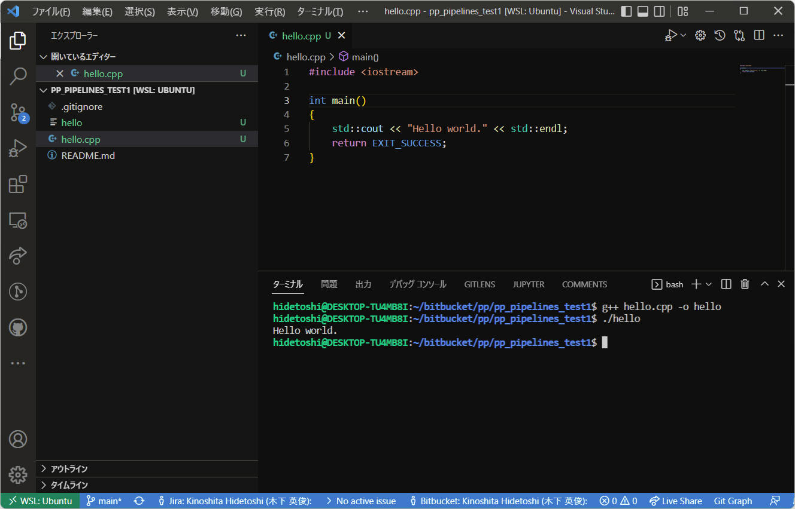
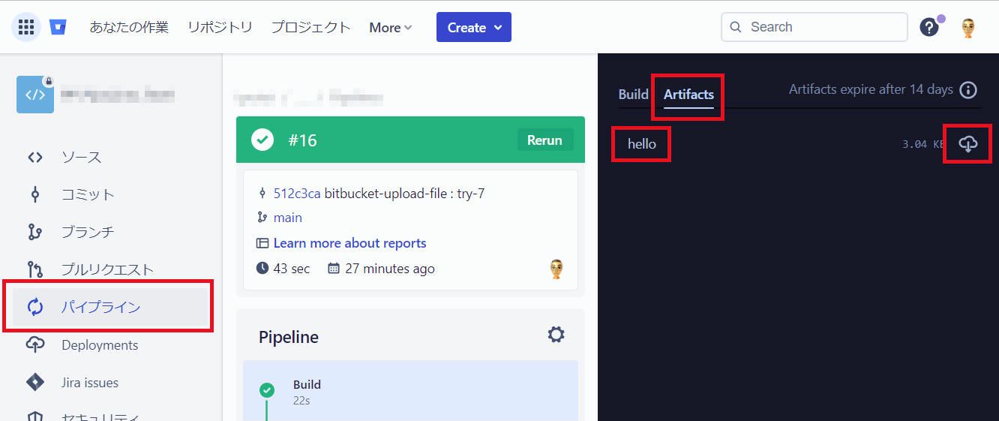

[Bitbucket Pipelines] c++(g++) をビルドする
Bitbucket Pipelines を使って c++(g++) をビルドする手順について記載します。
1-1. リポジトリを作成
リポジトリを作成します。詳細割愛。
1-2. リポジトリをクローン
リポジトリをローカルＰＣへクローンします。

1-3. サンプルソース（c++）を作成
ソースコードを作成します。下記は例です。

プログラム例（”hello.cpp”）
#include <iostream>
int main()
{
std::cout << "Hello world." << std::endl;
return EXIT_SUCCESS;
}
1-4. コミット＆プッシュ
作成したソースコードをコミット＆プッシュします。

クラウド側に登録を完了

1-5. Pipelines を有効化
以下の手順で Pipelines を有効化します。
(1) ”Repository settings” をクリックします。

(2) “PIPELINES“ の中の "Settings“ をクリックします。

(3) “Enable Pipelines“ をチェック状態にします。
これで Pipelines が有効になりました。
(4) ”bitbucket-pipelines.yml” の雛形を準備します。ここでは下記手順で雛形を準備してみました。
「パイプライン」⇨「Build C++ Application」
内容を確認後［Commit file］ボタンをクリックします。

すると・・・初めての Pipelines が実行されました。

当然ながら Failed となりました。
こんなメールが私へ届きました。これは良いですね。
複数メンバーがいるときなど、このメールは誰に対して送信されるのかが気になりましたが、ここでは一旦忘れて進めます。

”パイプライン” メニューをクリックすると Status が ”Failed”
のものがあります。
クリックして内容を確認してみると・・・ make に check の記載がされていない ・・・ということらしいです。そもそも makefile
を準備していないので、エラーになって当然の状況です。

「ソース」を確認すると、とりあえず ”bitbucket-pipelines.yml” ファイルが追加されています。

現時点の yml ファイル内容を以下に記載します。今後このファイルを編集していくことで Pipelines を実際に動くようにしていきます。
["bitbucket-pipelines.yml"]
# Template C++ Application
# This template allows you to validate your C++ application.
# The workflow allows running tests and code linting on the default branch.
image: gcc:10.2
pipelines:
default:
- parallel:
- step:
name: Test
script:
- make check
- step:
name: Lint
script:
# apt update && apt -y install cppcheck && cppcheck .
- make lint
- step:
name: Build and Run
script:
- make compile
# Execute your C++ application after compilation to check success
- make distcheck
以上で 事前準備 を完了とします。
“bitbucket-pipelines.yml” を編集することで、基本的なビルド＆デプロイを実装していきます。
2-1. image を ubuntu:18.04 に設定
ここでは例として実行環境（Docker Image）を ubuntu:18.04 に設定します。
（新）image: ubuntu:18.04
（旧）image: gcc:10.2
ちゃんと “Ubuntu 18.04” になったか確認のため、"cat
/etc/lsb-release" の一文も追加します。
2-2. 開発環境（gcc/g++ など － “build-essential”）をインストール
下記２行を追加します。
- apt-get update
- apt-get -y install build-essential
2-3. ソースコードをビルドする
下記１行を追加します。
- g++ hello.cpp -o hello
2-4. “parallel” 処理をやめて同時実行を１つのみに修正
Pipelines の実施をシンプルにすることを目的に、”Test” の step のみを残して他の step
を削除して簡略化します。詳細説明を割愛。修正後の内容は後述の ”bitbucket-pipelines.yml” を参照。
（parallel は高速な実行を実現できるとても魅力的な機能ですが、この機能を使用するのは Pipelines
をある程度使用できるようになってから検討しましょう。）
2-5. 以上の修正を実施後の “bitbucket-pipelines.yml“
以上の修正を行った結果の ”bitbucket-pipelines.yml” を以下に示します。
["bitbucket-pipelines.yml"]
image: ubuntu:18.04
pipelines:
default:
- step:
name: Build
script:
- cat /etc/lsb-release
- apt-get update
- apt-get -y install build-essential
- g++ hello.cpp -o hello
上記修正で Pipelines 実行を正常に完了できるようになりました。OS も “Ubuntu 18.04.6 LTS“
を意図通りにロードできていることを確認できました。

本書記載時点、正常終了した Pipelines に対するメールは届きませんでした。
機能拡張「Jira and Bitbucket (Atlassian Labs)」をインストールした “VS code”
から正常終了した Pipelines を下図のように確認することができました。

以上で正常動作する “bitbucket-pipelines.yml” を構築できました。
この後は少しずつ機能を加えていく感じで修正を行っていきたいと思います。
アーティファクトは、ステップによって作成されるファイルです。パイプライン設定で定義したら、以降のステップで共有したり、エクスポートしてステップの完了後にアーティファクトを保持したりすることができます。たとえば、ビルド
ステップで生成された JAR ファイルまたはレポートを、後のデプロイメント
ステップで使用できます。ステップで生成されたアーティファクトをダウンロードしたり、外部ストレージにアップロードすることもできます。
次の点に留意する必要があります。
- ステップの最後に BITBUCKET_CLONE_DIR
にあるファイルをアーティファクトとして構成できます。BITBUCKET_CLONE_DIR
は、リポジトリが最初にクローンされるディレクトリです。
- glob パターンを使用してアーティファクトを定義できます。* で開始される glob パターンは、引用句で囲む必要があります。
注:
これらは glob パターンのため、パス セグメント "." および ".." を使用できません。ビルド ディレクトリに相対的なパスを使用します。
- アーティファクトのパスは、BITBUCKET_CLONE_DIR からの相対パスになります。
- ステップ中で作成されたアーティファクトは、以降のすべてのステップで使用できます。
- アーティファクトは、生成から 14 日後に削除されます。
- アーティファクトは、１ファイル当たりのファイルサイズ 1GB
という上限があります。このサイズを超えるファイルをアーティファクトとして登録できません。
ここまで作成した “bitbucket-pipelines.yml“ にアーティファクト指定を加えてみます。
["bitbucket-pipelines.yml"] ファイルをアーティファクトへ登録した例
image: ubuntu:18.04
pipelines:
default:
- step:
name: Build
script:
- cat /etc/lsb-release
- apt-get update
- apt-get -y install build-essential
- g++ hello.cpp -o hello
artifacts:
- hello
["bitbucket-pipelines.yml"] フォルダーをアーティファクトへ登録した例
image: ubuntu:18.04
pipelines:
default:
- step:
name: Build
script:
- cat /etc/lsb-release
- apt-get update
- apt-get -y install build-essential zip
- mkdir out
- g++ hello.cpp -o out/hello
artifacts:
- out/**
パイプラインを実行後の画面です。”Artifacs” の画面から “hello“ をダウンロードすることができます。

参考：
ステップ１： リポジトリ所有者向けにアプリパスワードを作成する
ステップ２： 認証トークンを使用して Pipelines 変数を作成する
ステップ３a： Bitbucket-upload-file パイプを使用したアーティファクトのデプロイ
ステップ３b： curl および Bitbucket REST API を使用したアーティファクトのデプロイ
(参考) curl コマンドでダウンロードへ登録したファイルを取得する
5. パイプライントリガー
5-1. 手動でパイプラインを実行する
5-1-1. 手動実行のみ可能なパイプラインを設定する
5-1-2. ブランチとパイプランを選んで手動でパイプラインを実行する
方法１
方法２
5-1-3. 特定コミットをパイプライン実行する
5-2. 特定ブランチへのコミットをトリガーにパイプラインを実行する
5-3. “Pull Request” をトリガーにパイプラインを実行する
5-4. スケジュールでパイプラインを実行する
パイプラインのスケジュールを作成する
スケジュールの削除
6. パイプラインで git clone する
6-1. public リポジトリを git clone する
6-2. 他の Bitbucket private リポジトリを git clone する
7. アーティファクトのファイル名にビルド番号を付ける
9. ユニットテストへ動的解析を加える (valgrind)
10. ユニットテストへソースコードカバレッジを加える
Appendix
A.1. Pipelines の step における失敗によりスクリプト停止を避ける方法
A.2. Pipelines 最長実行時間を変更する方法
本ページの情報は、特記無い限り下記 MIT ライセンスで提供されます。
The MIT License (MIT)
Copyright 2024 Kinoshita Hidetoshi
Permission is hereby granted, free of charge, to any person obtaining a copy
of this software and associated documentation files (the "Software"), to deal
in the Software without restriction, including without limitation the rights
to use, copy, modify, merge, publish, distribute, sublicense, and/or sell
copies of the Software, and to permit persons to whom the Software is
furnished to do so, subject to the following conditions:
The above copyright notice and this permission notice shall be included in all
copies or substantial portions of the Software.
THE SOFTWARE IS PROVIDED "AS IS", WITHOUT WARRANTY OF ANY KIND, EXPRESS OR
IMPLIED, INCLUDING BUT NOT LIMITED TO THE WARRANTIES OF MERCHANTABILITY,
FITNESS FOR A PARTICULAR PURPOSE AND NONINFRINGEMENT. IN NO EVENT SHALL THE
AUTHORS OR COPYRIGHT HOLDERS BE LIABLE FOR ANY CLAIM, DAMAGES OR OTHER
LIABILITY, WHETHER IN AN ACTION OF CONTRACT, TORT OR OTHERWISE, ARISING FROM,
OUT OF OR IN CONNECTION WITH THE SOFTWARE OR THE USE OR OTHER DEALINGS IN THE
SOFTWARE.